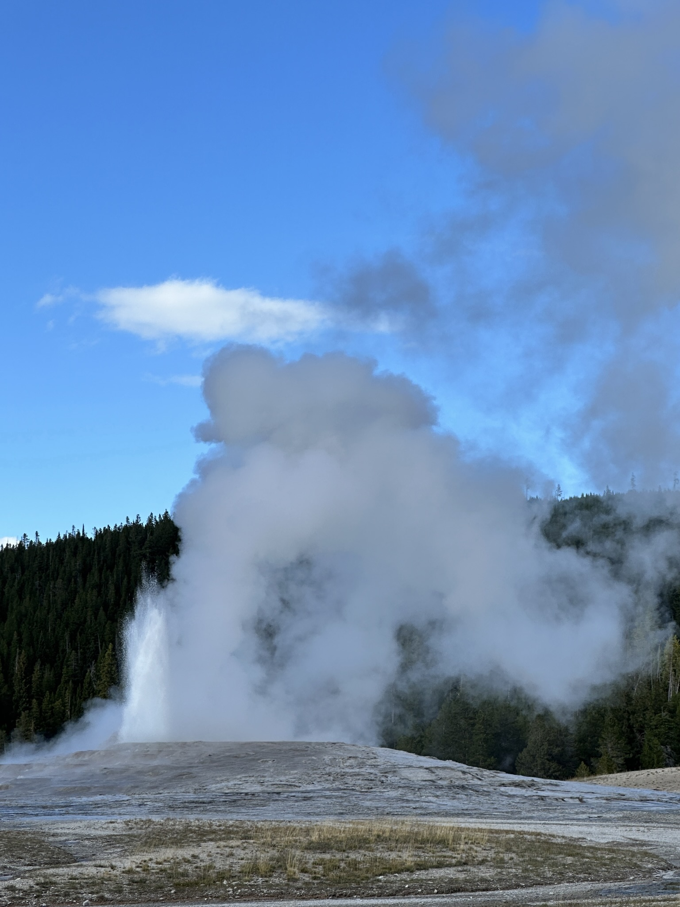
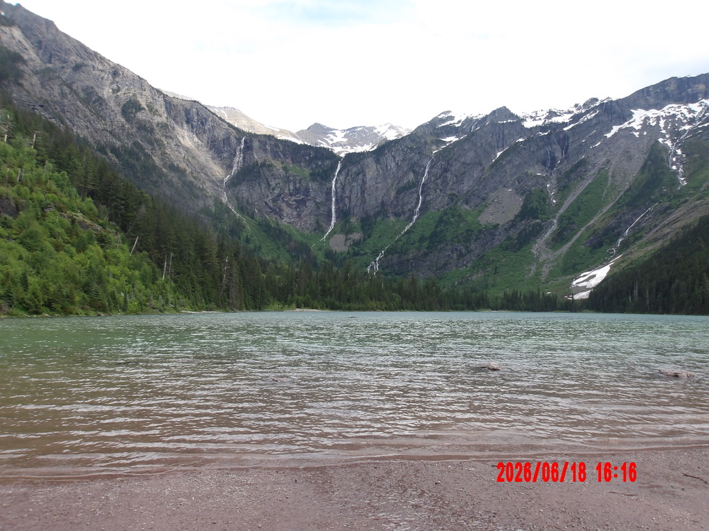
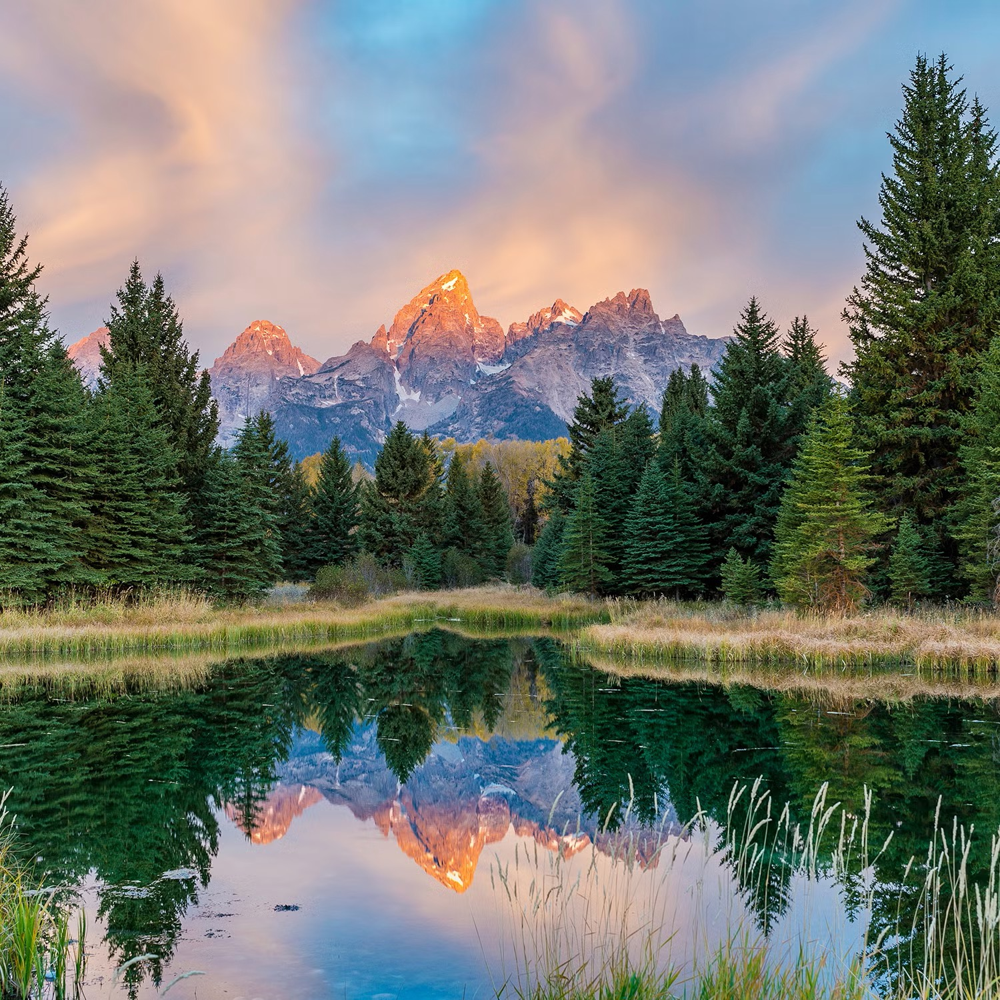
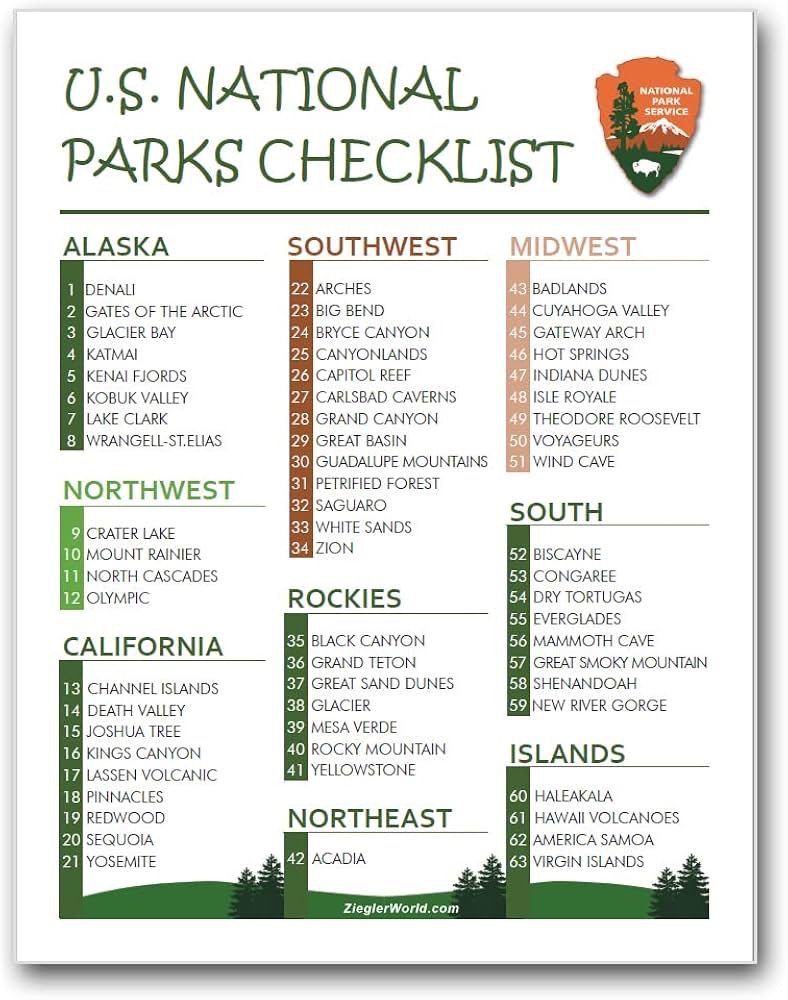

When you are stuck behind a desk all school year it is very important that you get outdoors when you can. Every Summer I try to make it to atleast one national park. This summer it was Glacier National Park, last summer it was Yellowstone National Park, and next summer it will Grand Teton National Park

Click here to see my Yellowstone TripThe first park I visited was Yellowstone. The trip was made up by both my brothers, Quin and Justin, my sister Nicole, my uncle Bill, and I We stayed in a hotel in West Yellowstone, and reentered the park everyday. We were going to camp but Nicole is a quadrapaligic and would'nt be able to stay with us. We visited Quake Lake, ol'faithful, and many other attractions. Over the two national parks I have been to Yellowstone was proabaly my least favorite.

Click here to see my Glacier TripGlacier National Park was the one I had the priviledge to check off my list this summer. I traveled with my best friends Eden, Maddy, and Brooke they were one of the best parts of the adventure. We camped 2 nights and stayed in a cabin the other night. The main attractions we went to were Avalanche Lake, Red Rock Falls, Many Glacier, Lake McDonald, Aplikuni Falls, and honestly one of the best ones was the drive around, everywhere you looked was a beautiful view. Glacier was by far my favorite national park I have been to, and I can't wait to go back.

Click here to see the plan for Grand Teton National ParkGrand Teton National Park coming 2027... Explore the plan!

Click here to see the National Park Checklist